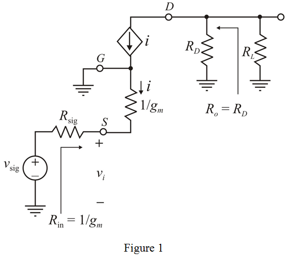
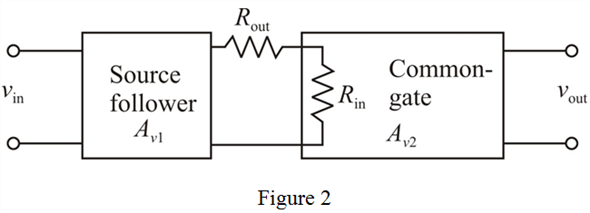

Step 1:
(a)
Refer to Figure P5.116 (a) in the textbook for the source-follower circuit.
Consider that the NMOS transistor in the circuit has the transconductance,  , and a large small-signal output resistance,
, and a large small-signal output resistance,  .
.
Find the open-loop gain of the amplifier,  .
.

Since, the small-signal output resistance,  is large, consider that,
is large, consider that,  .
.
Therefore, simplify the expression for  .
.
Therefore, the open-loop voltage gain of the amplifier, is, .
Step 2:
Find the output resistance of the amplifier.
Substitute 5 mA/V for  .
.
Therefore, the output resistance of the amplifier,  is, .
is, .
Step 3:
(b)
Refer to Figure P5.116 (b) in the textbook for the common-gate amplifier circuit.
Consider that the NMOS transistor in the circuit has the transconductance, , and a large small-signal output resistance,  .
.
Draw the small-signal equivalent of the circuit.

Step 4:
Find the input resistance of the amplifier.
Substitute 5 mA/V for  .
.
Therefore, the input resistance of the amplifier,  is,
is,  .
.
Find the output resistance of the amplifier.
Step 5:
Find the open-loop gain of the amplifier,  .
.
Substitute  for drain resistance,
for drain resistance,  ,
,  for load resistance,
for load resistance,  , and 5 mA/V for
, and 5 mA/V for  .
.
Therefore, the voltage gain of the amplifier,  is, .
is, .
Step 6:
(c)
Consider that the output of the source follower is connected to the input of the common-gate amplifier.
Consider the following connection arrangement:

Step 7:
Calculate the overall voltage gain of the amplifier arrangement in Figure 2.
Substitute 1 V/V for , and  for , and 7.14 V/V for .
for , and 7.14 V/V for .
Therefore, the overall voltage gain of the amplifier,  is, .
is, .